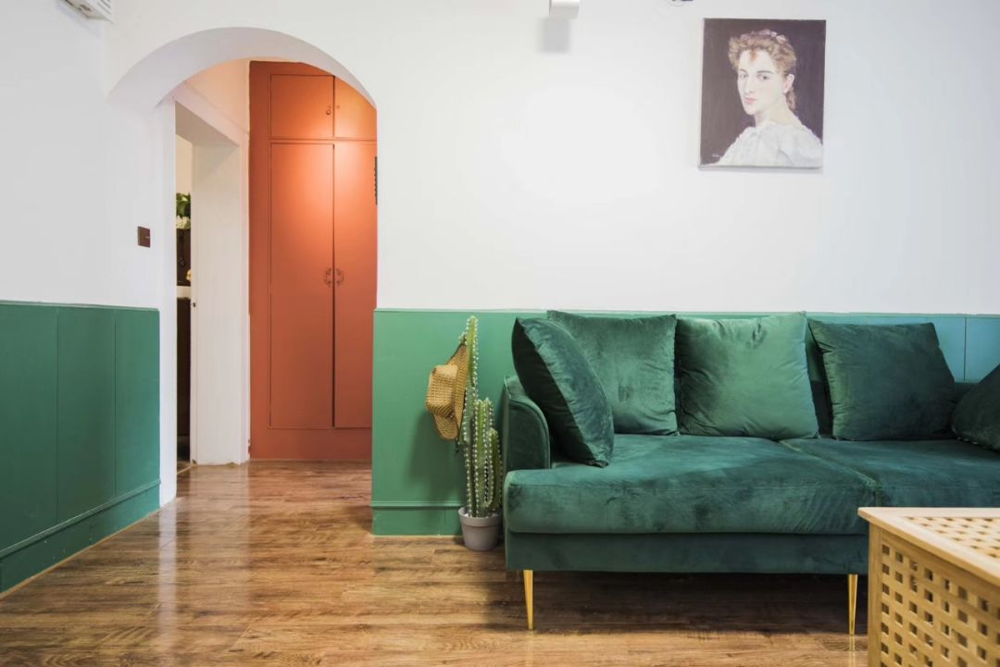
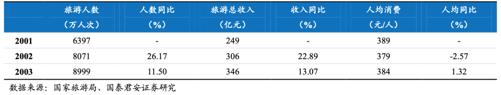
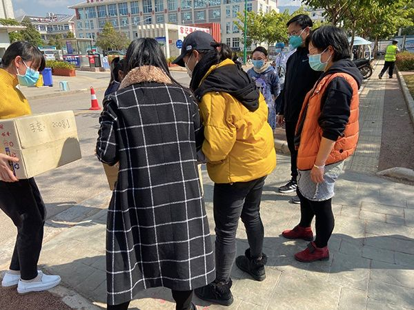

生鲜电商“疫”外崛起
原文链接 备份链接 *************▲************* 图为广州某小区物业在大门外设置的生鲜菜品取菜区。 （南方周末记者 冯飞/图） 全文共5066字，阅读大约需要7分钟。 大年初二，一位生鲜电商蔬菜采购员被派回了 …


文/杨洁
编辑/大风
进入一月份，张靖炜早早开始了准备。
他是一名90后，同时也是爱彼迎等共享住宿平台上的一名房东，和大学同学共同运营着19间民宿，房源位置分散在西安钟楼附近，这里也是各地游客青睐的目的地之一。
春节前后是开年第一战，也是所有民宿房东极其期待的旺季。按照往年的惯例，春节前后的业绩一般占到全年营收的五分之一。
截止到1月10日，在爱彼迎平台上，张靖炜的预订申请已经排到了2月份，每日的房源预订全满。为了迎接这个高峰期，张靖炜给自家民宿备足了洗发水、沐浴露等清洁用品，房间的保洁、日用品、基本保障也早已安排妥当。
他等待着开个好头，如无意外，在春节前后的两个月份，张靖炜的房费收入每个月约达10万元左右。
但突如其来的疫情打破了原有的计划，就像一台时钟，突然发出“归零”的声音。平台上不断取消的订单、高额的房租、物业费、未知的疫情发展，都成了他心头的刺。

张靖炜所运营的民宿之一
张靖炜的故事并非孤例，疫情危机引起的连锁效应，把不少企业的节奏打乱。其中，被寄予厚望的酒旅行业突然踩下一脚刹车，像多米诺牌一样，自下而上地给整个行业带去了突发的压力。
企业的救援也在同时开展，包括爱彼迎、小猪、途家在内的共享住宿平台，推出了针对疫情的应急措施，最大程度去保证房东和客人的权益。
这场突如其来的事件称得上对共享住宿平台业务的一次历练。
艰难处境下，平台和房东都正等待着春天的到来和行业的复苏。

一场突如其来的战役
对张靖炜来说，这场冲击几乎是突如其来的。
1月11日，他在平台上收到了首单退订申请，原定于大年初二到初五预订房源的的客人，商议退订，在春节前后，这算得上罕见的情况。
对方是来自武汉的四口之家，本想在春节期间带着父母出游，然而陆陆续续的肺炎消息，让他们做出了取消的决定，在房客的认知中，这算得上是“不可抗因素”，希望房东能够进行免责退款。
“当时距离过年还有十几天，按照往年的经验不可能空置。”张靖炜感受到了对方的顾虑，直接了当给房客进行了全额退款。
一天天往上跳的病例数字让他隐隐不安，但似乎又离得很远。为了保险起见，张靖炜当即给每个房间配备了84消毒液和酒精，并且开始给入住房客发放口罩。
第一例、第二例、第N例…..随着疫情蔓延，确诊数字飞涨，退订申请数也随着肺炎病例一起上涨，他的心情也变得越来越复杂。
疫情期间收到的退订申请
1月15日，张靖炜关闭了所有房间的预订。已经预订的日期中，如果客人没有取消订单，就正常接待，其他房间则统一关闭。
与此同时，疫情之下，大量游客开始变更行程，机票、火车票、酒店、民宿等旅游产品出现了大量的退改。
集中性的退订开始爆发，各大平台也迅速作出了反应。1月21号，携程等OTA平台，以及爱彼迎等共享住宿平台相继启动了相关的房源订单退订政策，为符合条件的房东和房客提供免责取消保障。
仅22日当天，张靖炜的民宿就退订了17单，那是武汉全面停止交通运营的前一天。
疫情带来的冲击，远远不止于退订。租金成本、运营成本、空置期间的损失，都是摆在面前最现实的问题。
在持久抗疫和不断变化的政策中，钱是为数不多的能够被量化的东西。在采访中，张靖炜给锌财经算了一笔账：除却所有房间的空置费，单单取消订单金额，就高达11万元。
房东受损的时候，突发的消费低潮，使得后端的共享住宿平台承压更是巨大。但在这种非常时刻，不少共享住宿平台在保障客人权益的同时，开始与房东共同分担风险，缓解眼下的焦虑。

共享住宿平台的“Plan B”
紧迫感之下，不同的共享住宿平台对怎么帮、什么是“帮”，也有不同的注解。
让张靖炜在内的房东慰藉的是：在这个过程中，爱彼迎平台开通了“新冠肺炎疫情”取消渠道和“爱在行动”房东志愿计划，房东和房客可以直接在App上自助协商取消，同时不会影响房东的相关考核指标以及“超赞房东”评选资格。
“这对我们来说是非常重要的，在这种紧急情况下，如果平台没有及时响应，部分房东可能会利益第一，造成人口的进一步流动。”张靖炜告诉锌财经。
2月5日，爱彼迎在先前的免费退订基础上，投入7000万元专项基金，作出对房东房客延长免责取消时间、对房东经济补偿等在内的“十项承诺”。
在爱彼迎发布的十项承诺中，除了给予参与到“爱在行动”房东志愿计划的房东一定的经济补偿外，也承诺未来会给到流量等资源支持，其中针对大陆地区相关的周租月租、暖心房东等相关政策也是首创。
在各大共享住宿平台的响应中，爱彼迎率先发声，算得上是“带节奏的人”。
爱彼迎率先发布对社区的“十项承诺”
随后，小猪和途家也先后发布了相应的帮扶政策，例如给出2月份房源订单一定的经济补偿，启动民宿房源中长租计划，以及后续的流量倾斜保证等等。
在免费退订的基础之上，其实各家的扶持政策中，所围绕的关键词：一是“免服务费”；二是“房东的后续发展”。
在业务恢复到正轨之前，对于大多数房东来说，如果得不到平台的支持，可能很难渡过去，“免服务费”的举措能在某种程度上，给房东带去一定喘息空间。
具体而言，爱彼迎主要针对湖北房源订单，免除服务费至5月1日；途家免除湖北地区2月份的订单；小猪则是针对2月份全国范围的订单。
“感知不大。”在三家平台上均有入驻的张靖炜，也表达了自己的看法，在他们看来，因为疫情冲击，其实2月份比较惨淡，基本没有订单。

遭遇冲击的民宿行业
而对房东来说，真正兴奋的点在于后续流量的倾斜。在这个期间，为顾客提供全额退款的房东，会得到爱彼迎平台上“暖心房东”的标签，疫情过后平台会针对性的提高房源的曝光量和其他方面的扶持与激励。
张靖炜的态度相对乐观：“以爱彼迎平台为例，如果平台提高房源的曝光量以及给予其他的一些营销激励，按照以往的经验，我的房源基本可以订满，相信两个季度就完全能够把疫情期间的损失补回来，这是最实质的帮助。”

抓住那些变与不变
根据中国文旅部数据统计，2019年春节期间，全国旅游接待总人数4.15亿人次，同比增长7.6%。而今年，这部分损失，正在由上中下游的玩家一起承担。
危机已经发生，平台和房东都急需一场自救。
包括爱彼迎在内的共享住宿平台的系列政策，其实不仅是疫情下的危机应对，也是其保证旅游产品的质量的举措。
从短期看，这次疫情对旅游业造成了冲击，今年上半年营收跳水，亏损已经是确定的状况。
但是从更长远的角度来说，参照2003后非典时代旅游市场的发展规律，加之春节诸多游客被压抑的旅游需求，疫情结束后旅游行业也会迎来新的发展契机。
2003年非典疫情结束后的第一个月，旅游行业就迎来了“报复性”的反弹，酒旅市场迎来了快速复苏。当年7月、8月各大旅游机构的业务量井喷式的增加，甚至超过了非典疫情爆发之前的水平。
对于旅游业来说，虽然容易受外部大环境的影响，但其核心的市场需求一直都在，在这个时期，有需求的人群反而有所增长。

非典过后，旅游人数反而逆势增长
对于共享住宿平台来说，把握好这个时机，保证旅游产品的质量和反应效率，保证房东未来发展，显得尤为重要。
考虑到市场回暖的周期，除却服务费，对于投资较大，位置环境较好的房源，可以暂时考虑做周租长租。
2月8日，爱彼迎已经上线了第一期周租月租活动，暖心房东将获得流量支持。据消息人士称，爱彼迎未来会继续深化该活动，包括减免平台服务费。
外部环境的变化需要行业中的人敏锐察觉，但不变的是企业内部的特性。
对于爱彼迎来说，疫情是一个变量，不变的是爱彼迎的社区精神。长期关注这家共享住宿巨头的人能够感受到，爱彼迎在文化层面的构建，让平台和房东两者的联系变得紧密，更有温度。
在疫情期间，爱彼迎房东Kenny在多个社交平台发出倡议信，自发的联合爱彼迎武汉社区房东，为医护人员提供免费住宿。
在清迈做民宿生意的李英，载着从爱心人士处拿到的3000个一次性医用口罩和300副医用手套，花了3天的时间，去支援普洱市思茅区人民医院。

爱彼迎房东李英将防护物资送到医院
背负着亏损压力的张靖炜，也在春节期间将房子提供给了西安市医护人员，并且与大学同学共同集资，向武汉协和医院捐赠了4000个口罩。
高凝聚力，有温度的社区也是爱彼迎独特文化价值的体现。

等待春天
在锌财经获得的一封爱彼迎内部信中，中国总裁彭韬提到：在中国市场，爱彼迎将更多的资源投入到了平台能力的建设上，这也使得面对突如其来的变化之时，可以更加灵活的分配资源，服务于眼前的必选项。
其次，作为一家业务遍布全球的公司，爱彼迎独特的全球优势也使得组织的抗风险能力更加强大，韧性更强。
在这段特殊的时期，平台开始专注于修炼内功，提升团队的基本功和组织的战斗力，更好的转危为机。

爱彼迎中国总裁彭韬发布的内部信
修炼内功的不止是平台，还有房东们。
如今在爱彼迎的民宿社区中，房东讨论最多的是话题，就是自救。在房东社区中，由于资金紧张，已经有一部分房东开始着手转让；但更多的从业者，仍在在寻求危机中可能的机会，为疫情过后的复苏做准备。
在张靖炜看来，有人退就有人进，风险和机会是并存的，这段时间如果运营得好，依然可以做到盈亏平衡。
与此同时，在爱彼迎此前发布的十项承诺中，专门针对疫期的房东培训课程也开始落地，已经正式上线爱彼迎房东学院的渠道当中，对于房东最关注的领域，给出指导方案或技巧。
值得注意的是，目前已经上线的课程，都是来自房东的自愿分享。

爱彼迎房东学院课程
“一开始的时候也很担心，但是到现在觉得应该行动起来，利用这段时间，把房源的运营精细梳理，根基打扎实，修好内功。”爱彼迎房东木木对短暂蓄力之后的行业前景仍然乐观。
对于房东来说，平台的帮扶是一部分。现在的沉寂期，更是很好的学习和反思的时间，什么是好看的房源、民宿应该如何设计、好的色彩搭配，空间结构是怎样的，这是民宿人需要不断提升，吸取经验的点。
新冠肺炎疫情下，房东该如何逆境生长？“没有一个冬天不会过去，没有一个春天不会来临。我相信疫情过后，共享住宿和旅游业都会快速恢复和反弹。熬过这段艰难时期，一定会迎来更好的春天。”爱彼迎超赞房东康健在他的分享中最后这样总结到。


原文链接 备份链接 *************▲************* 图为广州某小区物业在大门外设置的生鲜菜品取菜区。 （南方周末记者 冯飞/图） 全文共5066字，阅读大约需要7分钟。 大年初二，一位生鲜电商蔬菜采购员被派回了 …
原文链接 备份链接 开一家民宿曾经是很流行的创业方式， 但2020年初这场突如其来的疫情， 却将这个行业几乎彻底归零。 挂红灯笼贴春联的余丰里民宿，大门紧闭 我们采访了十多家民宿主， 他们的店分布在北京、南京、台州、杭州、厦门以及海外日 …
原文链接 备份链接 Original 老九论财经 三联生活周刊 三联生活周刊 About Feature 一本杂志和他倡导的生活。 Today 在全国人民对抗肺炎疫情的战役中，很多人都在想办法贡献绵薄之力，但是一些浑水摸鱼的行为也开始浮出 …
原文链接 备份链接 经济观察网 记者 李静 实习记者 刘兰 受到疫情影响，近期多地学校采用“线上授课”的方式响应教育部疫情期间学校“停课不停学”行动。这一行动，牵扯众多，也包括正在复习冲刺阶段的高三备考生们。 疫情对于教学工作、班级管理影 …
原文链接 备份链接 图片来源：视觉中国 记者：林北辰 编辑：文姝琪 “ 即使在网上买到了口罩，你也不一定能够用上——延迟发货是最普遍的情况；发货了，订单还要面临虚假发货、商品是三无产品的风险。 ” “你能买到口罩吗？” 这是疫情中所有人最 …